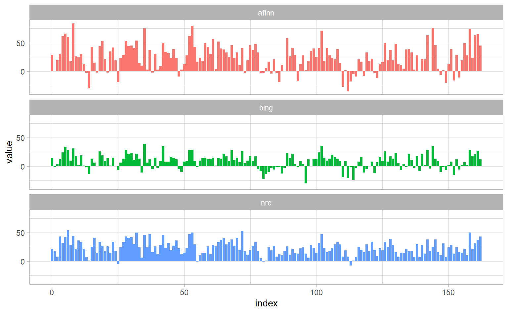

2.3 Comparing 3 different dictionaries
pride_prejudice <- tidy_books %>%
filter(book == "Pride & Prejudice")
pride_prejudice
#> # A tibble: 122,204 x 4
#> book linenumber chapter word
#> <fct> <int> <int> <chr>
#> 1 Pride & Prejudice 1 0 pride
#> 2 Pride & Prejudice 1 0 and
#> 3 Pride & Prejudice 1 0 prejudice
#> 4 Pride & Prejudice 3 0 by
#> 5 Pride & Prejudice 3 0 jane
#> 6 Pride & Prejudice 3 0 austen
#> # ... with 1.222e+05 more rowsafinn <- pride_prejudice %>%
inner_join(get_sentiments("afinn")) %>%
mutate(index = linenumber %/% 80) %>%
count(book, index, wt = value, name = "value") %>%
mutate(dict = "afinn") %>%
select(index, value, dict)
bing <- pride_prejudice %>%
inner_join(get_sentiments("bing")) %>%
mutate(index = linenumber %/% 80) %>%
count(index, sentiment) %>%
pivot_wider(names_from = sentiment, values_from = n, values_fill = list(n = 0)) %>%
mutate(value = positive - negative,
dict = "bing") %>%
select(index, value, dict)
nrc <- pride_prejudice %>%
inner_join(get_sentiments("nrc")) %>%
filter(sentiment %in% c("positive", "negative")) %>%
mutate(index = linenumber %/% 80) %>%
count(index, sentiment) %>%
pivot_wider(names_from = sentiment, values_from = n, values_fill = list(n = 0)) %>%
mutate(value = positive - negative,
dict = "nrc") %>%
select(index, value, dict)bind_rows(afinn, bing, nrc) %>%
ggplot() +
geom_col(aes(index, value, fill = dict), show.legend = FALSE) +
facet_wrap(~ dict, nrow = 3)
It is natural for score based on these 3 different dictionary to differ in some sense, because for the latter two we are just consider as the sentiment score the number of positive words minus that of negative words. But they shoud all have similar relative trajectories through the novel.
Why is, for example, the result for the NRC lexicon biased so high in sentiment compared to the Bing et al. result? Let’s look briefly at how many positive and negative words are in these lexicons.
get_sentiments("nrc") %>%
filter(sentiment %in% c("positive", "negative")) %>%
count(sentiment)
#> # A tibble: 2 x 2
#> sentiment n
#> <chr> <int>
#> 1 negative 3324
#> 2 positive 2312
get_sentiments("bing") %>%
count(sentiment)
#> # A tibble: 2 x 2
#> sentiment n
#> <chr> <int>
#> 1 negative 4781
#> 2 positive 2005Both lexicons have more negative than positive words, but the ratio of negative to positive words is higher in the Bing lexicon than the NRC lexicon. This will contribute to the effect we see in the plot above, as will any systematic difference in word matches, e.g. if the negative words in the NRC lexicon do not match the words that Jane Austen uses very well.. Whatever the source of these differences, we see similar relative trajectories across the narrative arc, with similar changes in slope, but marked differences in absolute sentiment from lexicon to lexicon. This is all important context to keep in mind when choosing a sentiment lexicon for analysis.